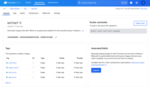

IACF installation and deployment
2024-04-28
Introduction:
The Industry Accelerator Framework (IACF) is a comprehensive solution designed to accelerate digital transformation initiatives in the manufacturing industry. At its core lies the Infrastructure as Code (IAC) backend application, responsible for orchestrating infrastructure operations seamlessly. The IAC User Interface (IAC-UI) serves as a user-friendly web portal, enabling seamless interaction with the IAC backend and facilitating the management of manufacturing IT solutions. The IACF ecosystem consists of several components, including the core IAC backend, IAC-UI web server, and optional components such as IAC-MQTT, IAC-OPC UA, IAC-ActiveMQ, and IAC-Kafka, which can be deployed based on your specific requirements. To streamline the deployment process, the IACF project provides pre-built Docker images for these components, as well as a Docker Compose file for orchestrating their deployment. Here are the two primary options for installing and deploying the IACF in your environment:
Option 1: Deploy Pre-built Docker Images
The IACF project maintains pre-built Docker images for the various components, which can be readily deployed using Docker. The available images include:
- iac-app-server: The core IAC backend application
- iac-web-server: The IAC-UI web server
- iac-mqtt: The MQTT integration component
- iac-signalr-server: The SignalR server component
- iac-kafka: The Kafka integration component
- iac-activemq: The ActiveMQ integration component
- mysql: The MySQL database
- mongodb: The MongoDB database
- grafana/grafana-enterprise: The Grafana monitoring and visualization tools

To deploy the IACF using pre-built Docker images, follow these steps: Ensure you have Docker installed on your system. Pull the desired Docker images from the IACF repository or Docker Hub. Run the Docker containers using the docker run command, mapping the necessary ports and configuring any required environment variables. For example, to run the IAC backend and IAC-UI web server, you can execute the following commands: docker run -d --name iac-app-server -p 8080:8080 iacf/iac-app-server:latest docker run -d --name iac-web-server -p 8000:8000 --link iac-app-server iacf/iac-web-server:latest Option 2: Build and Deploy from Source If you prefer to build the IACF components from source or make modifications to the codebase, you can clone the respective repositories and build the Docker images locally. Ensure you have Git and Docker installed on your system. Clone the desired IACF repositories from GitHub, such as iacf, iac, iac-ui, iac-signalr, iac-mqtt, etc. Navigate to the cloned repository directory. Build the Docker image using the provided Dockerfile: docker build -t iac-app-server:latest . Run the Docker container with the necessary configurations and port mappings. For example, to build and run the IAC backend from source, you can execute the following commands: git clone https://github.com/mdaxf/iac/iac.git cd iac docker build -t iac-app-server:latest . docker run -d --name iac-app-server -p 8080:8080 iac-app-server:latest Docker Compose For a more streamlined deployment experience, the IACF project provides a docker-compose.yml file in the iacf repository. This file defines the configuration for deploying multiple IACF components together using Docker Compose. Clone the iacf repository from GitHub: git clone https://github.com/mdaxf/iacf/iacf.git Navigate to the iacf directory: cd iacf Deploy the IACF components using Docker Compose: docker-compose up -d This command will build and start the necessary containers based on the configurations defined in the docker-compose.yml file. Regardless of the deployment method you choose, make sure to refer to the IACF documentation for detailed configuration instructions, including setting up database connections, integrating with external services, and customizing the deployment to meet your specific requirements. By leveraging the power of Docker and the IACF project's pre-built images and source code repositories, you can streamline the installation and deployment process, ensuring a seamless integration of the IACF components within your manufacturing IT environment.